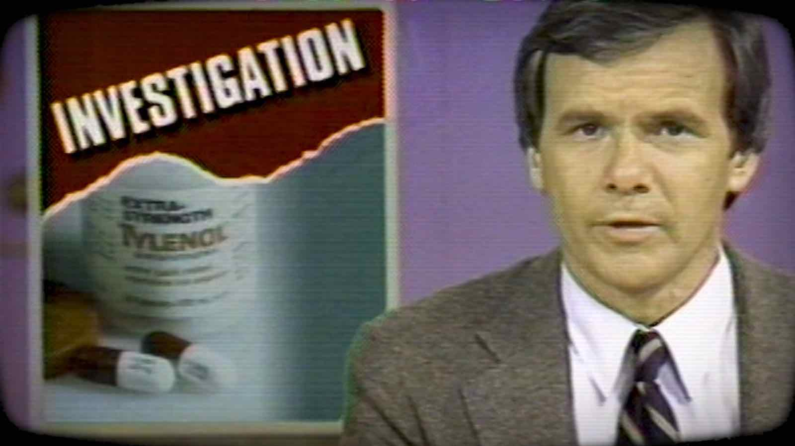

The infamous Tylenol® murders occurred in 1982 when seven people in the Chicago area of the United States died after consuming Extra Strength Tylenol® capsules that had been laced with cyanide. This was the first known serial murder case caused by deliberate product tampering.
On the morning of September 29, 1982, a 12-year old girl who had a headache died after taking a single capsule of Extra Strength Tylenol®. On that same day, an adult male who had also taken a capsule of Extra Strength Tylenol®, died in hospital. The next day, two members of the male victim’s family died, his brother and sister-in-law, after each taking a capsule from the same bottle. Between September 30 and October 1, 1982, three women all living separately but near Chicago died after taking capsules of Extra Strength Tylenol®.

After forensic toxicologists detected cyanide in each of the seven victims, they informed police investigators who soon discovered the Tylenol® link among the victims. Police then broadcast urgent warnings to the public through the media and by driving through Chicago neighbourhoods shouting warnings over loudspeakers.
Police determined that each of the five tampered Tylenol® bottles came from different factories. Therefore, the possibility of sabotage at the production stage in the factory was eliminated. Investigators supposed the culprit(s) had entered various stores in the Chicago area over several weeks and had tampered with bottles of Tylenol® by adding solid cyanide to some of the capsules within. The addition of the cyanide was likely done at another location because no witnesses ever claimed to have seen the tampering being done in any of the stores. After the culprit(s) added the poison to the capsules, he or she somehow put the capsules into the bottles, placing the full, sealed bottles on store shelves. Then, as usual, people bought them. After a massive product re-call of Extra Strength Tylenol®, three more tampered bottles were discovered at various stores in the Chicago area.
Extra Strength Tylenol® is a product of the company called Johnson & Johnson. When Johnson & Johnson was told of the poisonings of their product, it distributed warnings to hospitals and distributors, stopped all Tylenol® production, and suspended their advertising. Johnson & Johnson then issued a nationwide recall of all 31 million bottles of Tylenol® products.
After forensic investigators determined that only Tylenol® capsules were tampered with, Johnson & Johnson offered to exchange all capsules purchased with solid tablets. In addition, Johnson & Johnson offered a $100 000 reward for the capture and conviction of "the Tylenol Killer".
About the time of the killings, the price of Tylenol® stock collapsed from $35 to $8, but it rebounded in less than a year. Johnson & Johnson soon reintroduced Tylenol® capsules in a new, triple-sealed package. Within several years, Tylenol® again became the most popular over-the-counter pain medication in North America.
James W. Lewis was arrested after he contacted Johnson & Johnson telling them that he would stop the murders after he was given a large sum of cash. Later, investigators determined that Lewis was not responsible for the tampering, and that he was simply trying to extort money. James W. Lewis served 13 years of a 20-year prison term for this extortion attempt.
Police investigated Roger Arnold for the Tylenol® murders, but he was cleared of the killings. However, the intense media attention caused Arnold to have a mental breakdown during which he tried to kill the man he thought was responsible for turning him into police. However, due to his confused mental state, Arnold killed a complete stranger. Roger Arnold was found guilty of second-degree murder and served 15 years of a 30-year prison sentence.
The Tylenol® serial murder case has never been solved, but the incident led to changes in the packaging of over-the-counter drugs and in federal anti-tampering laws in Canada and the United States. All over-the-counter drugs now require tamper-proof safety seals. Product tampering is a federal crime in both countries.
The Tylenol® murders also prompted drug companies to reduce the production of capsules because foreign substances such as poisons are easily placed inside capsules without obvious signs of tampering. Many drug companies have replaced capsules with solid tablets.